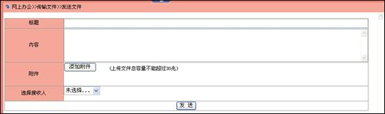
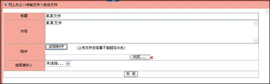
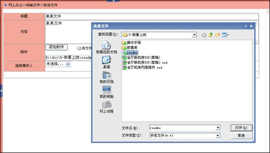
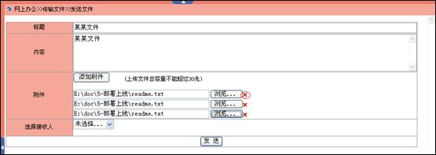
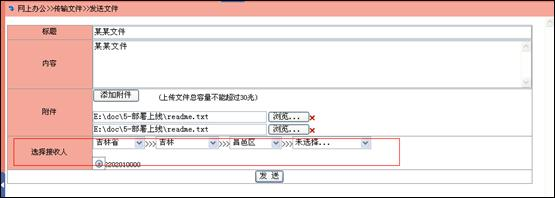

发送文件
点击菜单“网上办公>>传输文件>>发送文件”，进入“发送文件”页面，

填写标题和简略内容，点击“添加附件”,如下所示，出现浏览文件框

点击“浏览”按钮，选择发送的文件。

如果有多个文件，可以继续点击“添加附件”按钮，增加上传附件的文本框，点击“”图标删除添加的文件，如下所示

选择接收人，逐级选择机构，选择此机构下的工作人员，点击“发送”按钮发送文件，如下所示

传输文件